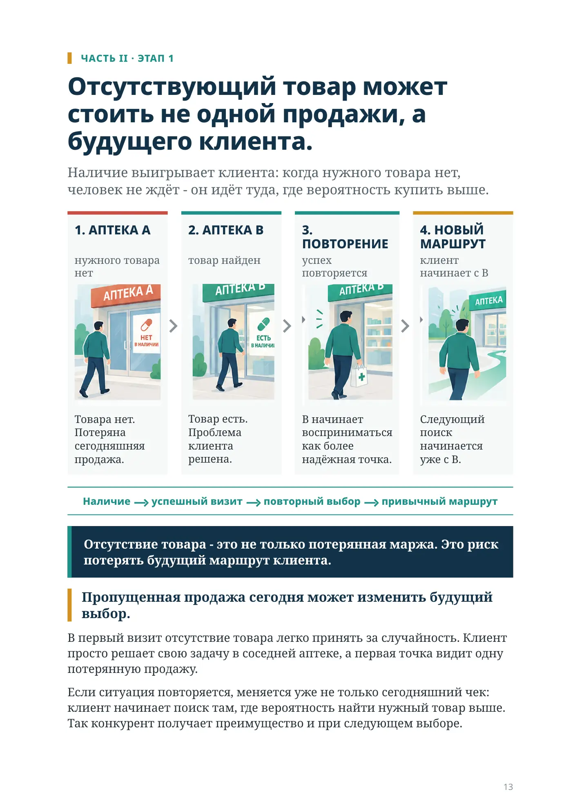
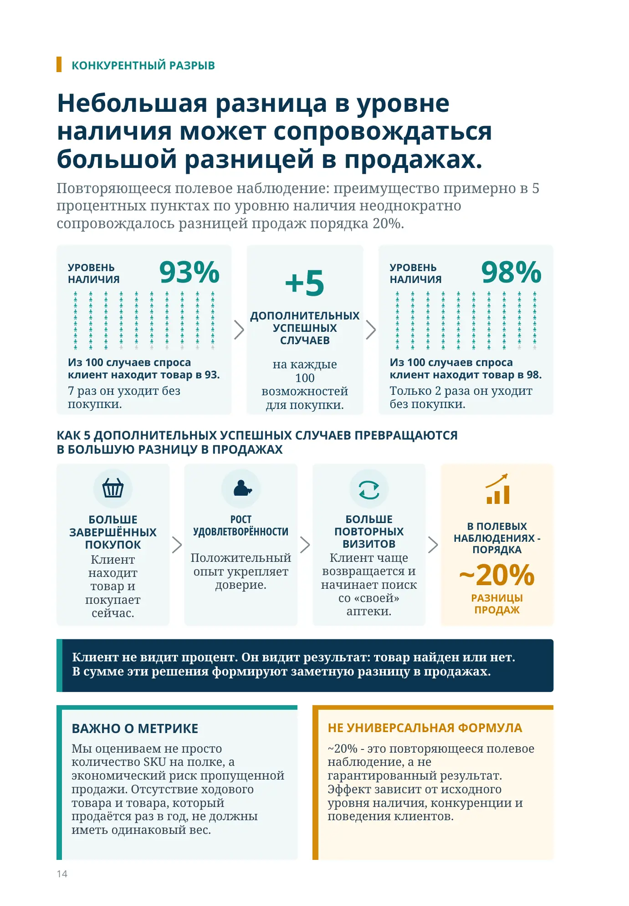
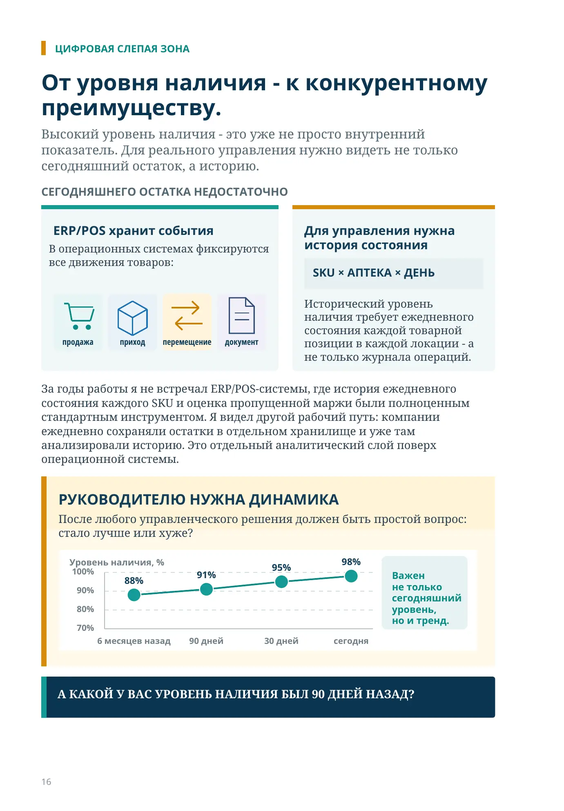
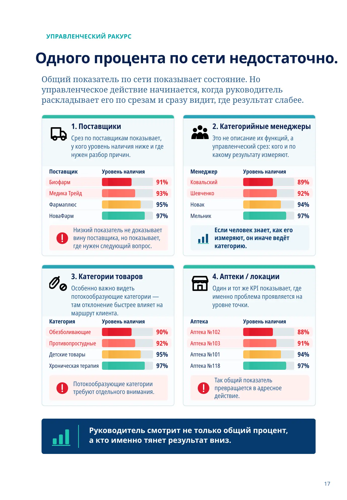
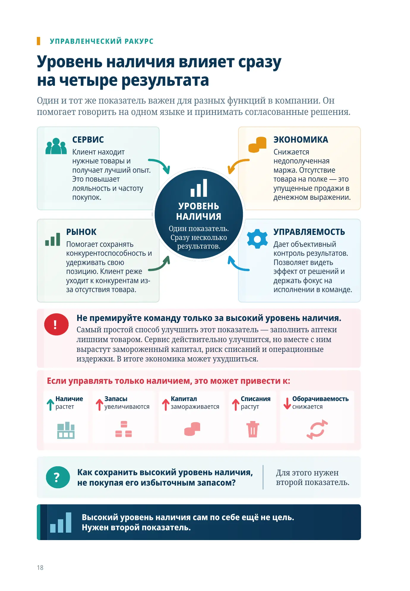
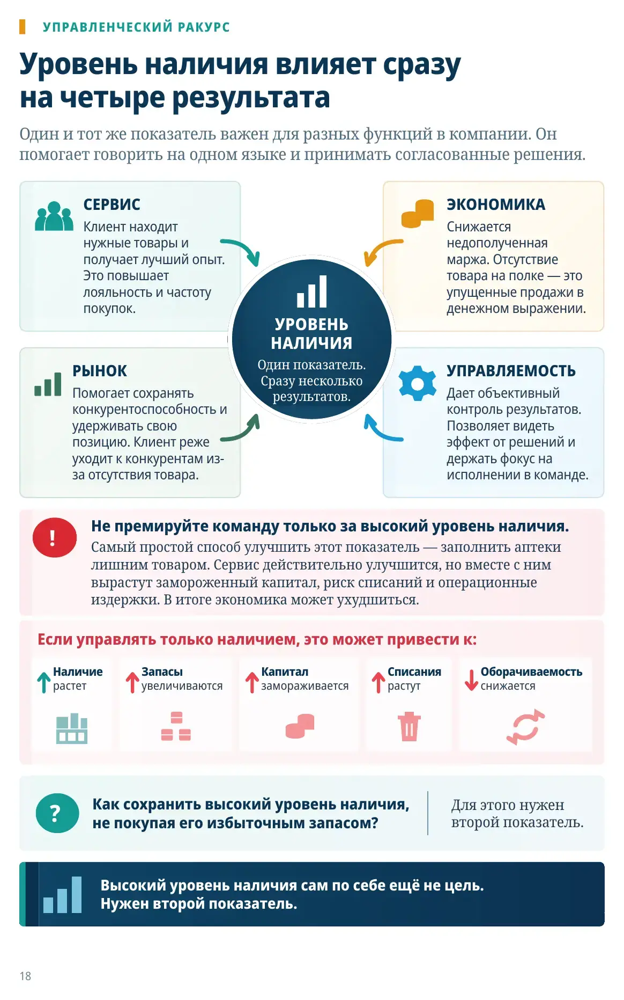

Наличие выигрывает клиента
ЧАСТЬ II · ЭТАП 1
Отсутствующий товар может стоить не одной продажи, а будущего клиента.
Наличие выигрывает клиента: когда нужного товара нет, человек не ждёт - он идёт туда, где вероятность купить выше.
1. АПТЕКА A
нужного товара нет
Товара нет. Потеряна сегодняшняя продажа.
2. АПТЕКА B
товар найден
Товар есть. Проблема клиента решена.
3. ПОВТОРЕНИЕ
успех повторяется
B начинает восприниматься как более надёжная точка.
4. НОВЫЙ МАРШРУТ
клиент начинает с B
Следующий поиск начинается уже с B.
Наличие → успешный визит → повторный выбор → привычный маршрут
Отсутствие товара - это не только потерянная маржа. Это риск потерять будущий маршрут клиента.
Пропущенная продажа сегодня может изменить будущий выбор.
В первый визит отсутствие товара легко принять за случайность. Клиент просто решает свою задачу в соседней аптеке, а первая точка видит одну потерянную продажу.
Если ситуация повторяется, меняется уже не только сегодняшний чек: клиент начинает поиск там, где вероятность найти нужный товар выше. Так конкурент получает преимущество и при следующем выборе.
КОНКУРЕНТНЫЙ РАЗРЫВ
Небольшая разница в уровне наличия может сопровождаться большой разницей в продажах.
Повторяющееся полевое наблюдение: преимущество примерно в 5 процентных пунктах по уровню наличия неоднократно сопровождалось разницей продаж порядка 20%.
УРОВЕНЬ НАЛИЧИЯ
93%
Из 100 случаев спроса клиент находит товар в 93.
7 раз он уходит без покупки.
+5 ДОПОЛНИТЕЛЬНЫХ УСПЕШНЫХ СЛУЧАЕВ
на каждые 100 возможностей для покупки.
УРОВЕНЬ НАЛИЧИЯ
98%
Из 100 случаев спроса клиент находит товар в 98.
Только 2 раза он уходит без покупки.
КАК 5 ДОПОЛНИТЕЛЬНЫХ УСПЕШНЫХ СЛУЧАЕВ ПРЕВРАЩАЮТСЯ В БОЛЬШУЮ РАЗНИЦУ В ПРОДАЖАХ
БОЛЬШЕ ЗАВЕРШЁННЫХ ПОКУПОК
Клиент находит товар и покупает сейчас.
РОСТ УДОВЛЕТВОРЁННОСТИ
Положительный опыт укрепляет доверие.
БОЛЬШЕ ПОВТОРНЫХ ВИЗИТОВ
Клиент чаще возвращается и начинает поиск со «своей» аптеки.
В ПОЛЕВЫХ НАБЛЮДЕНИЯХ - ПОРЯДКА
~20%
РАЗНИЦЫ ПРОДАЖ
Клиент не видит процент. Он видит результат: товар найден или нет. В сумме эти решения формируют заметную разницу в продажах.
ВАЖНО О МЕТРИКЕ
Мы оцениваем не просто количество SKU на полке, а экономический риск пропущенной продажи. Отсутствие ходового товара и товара, который продаётся раз в год, не должны иметь одинаковый вес.
НЕ УНИВЕРСАЛЬНАЯ ФОРМУЛА
~20% - это повторяющееся полевое наблюдение, а не гарантированный результат. Эффект зависит от исходного уровня наличия, конкуренции и поведения клиентов.
МЕТОДИКА И КЕЙСЫ
Как мы измеряем уровень наличия?
Не считаем SKU одинаковыми. Показатель экономически взвешивает риск пропущенной продажи через потенциально недополученную маржу.
ФОРМУЛА
Потенциальная маржа = фактическая маржа + оценочная недополученная маржа
Уровень наличия = фактическая маржа / потенциальная маржа × 100%
Оценка упущенной маржи = дни без товара × средний дневной расход × маржа на единицу
ДАННЫЕ КОНКРЕТНЫХ ПРОЕКТОВ
Сибирь и Урал
Сибирь и Урал: 88% → 98%
После изменения управления запасами уровень наличия поднялся примерно до 98%. Клиенты всё чаще воспринимали сеть как место, где вероятность найти нужный товар выше.
AlphaPharm, Армения
94% → 99,5%
Компания поставила жёсткую цель: уровень выше 99%, в идеале около 99,5%, даже без улучшения оборачиваемости. Цель была достигнута.
Высокий уровень наличия перестаёт быть внутренним операционным показателем. Он становится частью рыночной позиции.
ПОЭТОМУ ПОКАЗАТЕЛЬ ОТВЕЧАЕТ НА ДВА ВОПРОСА:
- какую долю потенциальной маржи компания не потеряла из-за отсутствия товара;
- насколько высок экономический риск неудовлетворённого спроса.
Именно поэтому я рассматриваю уровень наличия как финансовый показатель, который одновременно служит приближённым индикатором сервиса.
Для AlphaPharm цель около 99,5% была принципиально выше просто «хорошего» уровня. Смысл - сделать высокую вероятность наличия устойчивым свойством сети. Последние 0,5 п.п. здесь важны как ещё меньшее число ситуаций, когда клиенту приходится искать товар в другом месте.
ЦИФРОВАЯ СЛЕПАЯ ЗОНА
От уровня наличия - к конкурентному преимуществу.
Высокий уровень наличия - это уже не просто внутренний показатель. Для реального управления нужно видеть не только сегодняшний остаток, а историю.
СЕГОДНЯШНЕГО ОСТАТКА НЕДОСТАТОЧНО
ERP/POS хранит события
- продажа
- приход
- перемещение
- документ
Для управления нужна история состояния
SKU × АПТЕКА × ДЕНЬ
Исторический уровень наличия требует ежедневного состояния каждой товарной позиции в каждой локации - а не только журнала операций.
За годы работы я не встречал ERP/POS-системы, где история ежедневного состояния каждого SKU и оценка пропущенной маржи были полноценным стандартным инструментом. Я видел другой рабочий путь: компании ежедневно сохраняли остатки в отдельном хранилище и уже там анализировали историю. Это отдельный аналитический слой поверх операционной системы.
РУКОВОДИТЕЛЮ НУЖНА ДИНАМИКА
После любого управленческого решения должен быть простой вопрос: стало лучше или хуже?
6 месяцев → 90 дней → 30 дней → сегодня
А КАКОЙ У ВАС УРОВЕНЬ НАЛИЧИЯ БЫЛ 90 ДНЕЙ НАЗАД?
УПРАВЛЕНЧЕСКИЙ РАКУРС
Одного процента по сети недостаточно.
Общий показатель по сети показывает состояние. Но управленческое действие начинается, когда руководитель раскладывает его по срезам и сразу видит, где результат слабее.
1. Поставщики
Срез по поставщикам показывает, у кого уровень наличия ниже и где нужен разбор причин.
| Поставщик | Уровень наличия |
|---|---|
| Биофарм | 91% |
| Медика Трейд | 93% |
| Фармаплюс | 95% |
| НоваФарм | 97% |
Низкий показатель не доказывает вину поставщика, но показывает, где нужен следующий вопрос.
2. Категорийные менеджеры
Это не описание их функций, а управленческий срез: кого и по какому результату измеряют.
| Менеджер | Уровень наличия |
|---|---|
| Ковальский | 89% |
| Шевченко | 92% |
| Новак | 94% |
| Мельник | 97% |
Если человек знает, как его измеряют, он иначе ведёт категорию.
3. Категории товаров
Особенно важно видеть потокообразующие категории — там отклонение быстрее влияет на маршрут клиента.
| Категория | Уровень наличия |
|---|---|
| Обезболивающие | 90% |
| Противопростудные | 92% |
| Детские товары | 95% |
| Хроническая терапия | 97% |
Потокообразующие категории требуют отдельного внимания.
4. Аптеки / локации
Один и тот же KPI показывает, где именно проблема проявляется на уровне точки.
| Аптека | Уровень наличия |
|---|---|
| Аптека №102 | 88% |
| Аптека №103 | 91% |
| Аптека №101 | 94% |
| Аптека №118 | 97% |
Так общий показатель превращается в адресное действие.
Руководитель смотрит не только общий процент, а кто именно тянет результат вниз.

Уровень наличия влияет сразу на четыре результата
Один и тот же показатель важен для разных функций в компании. Он помогает говорить на одном языке и принимать согласованные решения.
СЕРВИС
Клиент находит нужные товары и получает лучший опыт. Это повышает лояльность и частоту покупок.
ЭКОНОМИКА
Снижается недополученная маржа. Отсутствие товара на полке — это упущенные продажи в денежном выражении.
НАЛИЧИЯОдин показатель.
Сразу несколько результатов.
РЫНОК
Помогает сохранять конкурентоспособность и удерживать свою позицию. Клиент реже уходит к конкурентам из-за отсутствия товара.
УПРАВЛЯЕМОСТЬ
Дает объективный контроль результатов. Позволяет видеть эффект от решений и держать фокус на исполнении в команде.
Самый простой способ улучшить этот показатель — заполнить аптеки лишним товаром. Сервис действительно улучшится, но вместе с ним вырастут замороженный капитал, риск списаний и операционные издержки. В итоге экономика может ухудшиться.
Если управлять только наличием, это может привести к:
Высокий уровень наличия сам по себе ещё не цель.
Нужен второй показатель.